nexial.executionType- plan - indicate current execution is to execute a test plan
- script - indicate current execution is to execute a test script
nexial.runIDyyyyMMdd_HHmmss.
nexial.runID.prefixnexial.runID, which is based on the timestamp of the
start of an execution. This will directly impact the output directory, in that both the prefix and the
autogenerated runID will represent the output directory name.The purpose of using a prefix has manifolds. Read on...
Organize your output better
Surely you can see how this:

... is more organized and informative than:

Create dashboard of your executions
Using the same prefix, we can collect a series of execution to be summarized together. For example,

Using the above summary, one can track the change in execution over time - total steps, pass % and execution duration.
NOTE: this System variable MUST be specified during execution. Specifying it in a data file will have no effect. Below are a couple of examples:
set JAVA_OPT=-Dnexial.runID.prefix=Sprint14 -Dnexial.outputToCloud=true
nexial.cmd -plan ...
nexial.cmd -script ...
-override nexial.runID.prefix=Sprint14
-override nexial.outputToCloud=true
nexial.env-override or set JAVA_OPT=-D...This System variable instructs Nexial to load an environment-specific
project.properties AFTER
loading the default artifact/project.properties file. For more details and examples, see the
Through project.properties page.
nexial.projectProperties.trimKey
-override or set JAVA_OPT=-D...This System variable instructs Nexial to load the
project.properties with the data variable
names (i.e. the property keys) trimmed. As such the data variable name derived from the
project.properties will not contain any leading or trailing whitespaces.One can consider this System variable as a form of improving readability over project artifacts. Consider the following 2
project.properties:
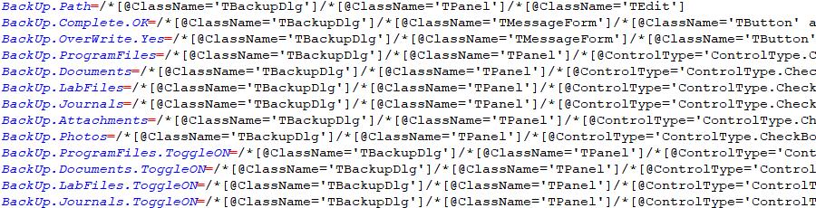

One may argue that the latter looks more organized. Many of the modern text editors support this sort of text formatting. If one would like to structure the
project.properties so that the data
variable values aligned (shown above as the latter image), then set this System properties as true. However,
note that this System variable MUST BE SET FROM COMMAND LINE via the -override parameter
or via the set JAVA_OPT=-D... environment variable.By default, this System variable is set to
false for backward compatibility.
nexial.verbosenexial.quietSet this System variable to
true to drastically reduce the amount of console logging during
execution. Most notably, the PASS or FAIL logs will be omitted when
quiet mode is enabled. The
base » verbose(text) will still be logged
to console, along with start of each step. However, log file (stored to $(syspath|log|fullpath))
will not be affected by this System variable.The quiet mode only affects console logging, and is most useful when the reduction of such ease one's attempt to follow the execution flow.
nexial.elapsedTimeSLAresult column.Note that this SLA will not be applicable to the composite commands such as:
- base »
macro(file,sheet,name) - base »
macroFlex(macro,input,output) - base »
repeatUntil(steps,maxWaitMs) - base »
section(steps)
Similarly, all the
wait... commands will be exempt from this SLA check since such command would
likely contain its own SLA (aka timeout) enforcement.
nexial.lastElapsedTimenexial.delayBetweenStepsMs
nexial.textDelim,For example,
Apple,Banana,Orange would be split into an array of 3 elements:
Apple, Banana and Orange. However, using the default comma might not always be the best option. Overriding this configuration provides the flexibility needed to transform a single text string into an array of text.
nexial.resolveTextAsURLtrue, this System variable instructs Nexial to make the attempt of resolving the
text parameter of a command or expression - where appropriate - as a valid URL. If such resolution is
attained, Nexial automatically substitute such text parameter with the content behind such URL (HTTP GET).
This can simplify the automation tasks at hand, esp. when there are multiple URL-backed content, or if the URL is dynamically generated. By default, this System variable is set to
false to avoid any
undesired surprises.Currently this System variable, and the underlying feature, is applied to TEXT Expression and
ws commands, with other areas of Nexial soon to follow.Note that this System variable supersede the now-deprecated
nexial.expression.resolveURL System variable.
nexial.resolveTextAsIs- Follow such file and read in its content to represent the corresponding data variable or parameter
- Perform data variable substitution if any data variable is found in the text content of the file above
The above is the default behavior, and most likely the desired behavior
However, at times one might want to avoid such automation (i.e. data variable substitution). To disable Step #2 (data variable substitution), one would set the value of this System variable to
true.
Note that this System variable supersedes the now-deprecated
nexial.expression.OpenFileAsIs System variable.
nexial.nullValue(null)null, empty, blank? To improve readability and maintainability, Nexial uses the following as reserved word:
(null)- null; meaning no value whatsoever.(empty)- empty string; meaning text that is zero in length.(blank)- 1 space; 1 blank space.(tab)- 1 tab character.
nexial.var.ignored${...} and substitutes them with
the corresponding value. This is an useful feature to create dynamic data substitution and generation.However at times it is important that some data variables are left as it is. It might be a case of multi- stage text processing where Nexial is used to process some of the data variables and another program for additional data variables (which should be left alone). It might be a case of time-triggered processing where some data variables become available/meaningful at a later time (and thus should be ignored presently). Whatever the case may be, one can use this System variable to define a list of data variables to be ignored. All the data variables defined in this System variable will be left as is.
It is important to note that this System variable should be ONLY the data variable name. For example, the following is considered correct:

But the following is considered incorrect:

nexial.var.defaultAsIs
${...} and substitutes them with
the corresponding value. If a data variable, as derived from the ${...} syntax, is not found
or is not associated with a value, Nexial will replace the corresponding ${...} with empty
value - effectively removing that ${...} text.However at times it may be important NOT to substitute missing data variable with empty value and keep the
${...} as is. Perhaps the missing data variable(s) will be made available later in
the execution or be handled by another downstream process. For this reason, one can use this System variable
to instruct Nexial NOT to empty out non-existing data variable substitution.By default, this System variable is set to
false. Changing it to true will leave
all non-matching ${...} as is.
nexial.outputToCloud
Follow this guide for one-time setup of
nexial.outputToCloud configurations.
nexial.subplansIncluded
-subplans command option during Single plan
execution.
nexial.subplansOmitted-subplans command option during Single plan
execution.
nexial.scriptRef.*
Adding these information - while one may reference them within script - do not necessarily change the execution or behavior of related script(s). However, the output would look something like this:

As such, the output provides contextual information about the execution such as:
- "Against which build was the test executed"
- "On which environment was the test run", and
- "What is the primary business data used for this execution".
nexial.scenarioRef.*nexial.scriptRef.*, except it applies
to the scenario level (not script). As such, one can provide context information at the scenario level,
which can
possible change over iterations. Example:
Here the
companyId is changing from 15 to 1602 between iteration 1
and 2.
The output would reflect as such:

nexial.stepByStepEnter on the console to resume the next step.
nexial.inspectOnPausenexial.pauseOnErrorThis is the premise of this System variable. When set to
true, Nexial will pause the execution
when a FAIL condition is encountered. This gives automation engineer an opportunity to observe and trace
through both the AUT and the script in action. When use in combination with
nexial.inspectOnPause, this can be a even more powerful
tool to work through the FAIL condition as and when error occurs.By default, this System variable is set to
false.
nexial.odiEnabledTurning off ODI has the benefit of slightly faster execution. However its benefits often outweighs the cost thereof. During active script development or troubleshooting, it is usually recommend to leave this feature enabled.
Like most interactive feature, ODI is disabled - by design - when Nexial is executing in the CI/CD environment.
nexial.odiTimerSee On-Demand Inspection (ODI) for more details.
nexial.odiKeys!!!!!! but one
can change it to other ASCII character sequence. Note that compound key sequences that contains
[CONTROL], [ALT], [WIN], [OPTION] and
[COMMAND] are not supported, as such are usually trapped by the underlying console
application.See On-Demand Inspection (ODI) for more details.
nexial.failFastnexial.resetFailFastThe typical use case for using such system variable would be something such as:
- You have some scripts declared in a test plan that must execute regardless of the status of preceding scripts - such as clean up scripts or notification scripts
- You have some scripts that can react to the failure of preceding script, and therefore must execute regardless of the preceding success/failure status
nexial.failImmediate| steps | design intent |
|---|---|
set nexial.failFast to false |
At this time, errors may be tolerated. Perhaps we are dealing with a new functionality. |
| more test steps here ... | Test proceed as scripted. When failure found, we'll continue to subsequent test steps. |
set nexial.failImmediate to true |
Now that we've gone passed the "less confident" portion of the test, we want insist that the test execution from this point onward must be 100% successfully. This will be effective beyond current iteration and script. |
| more test steps here ... | Here are the test steps that are known to be stable. |
| ... | ... |
nexial.disableCriticalCommandsAs this time, here are the list of critical commands:
However, at times it is important (or, more "critical") that we don't terminate execution on account of such failure condition. One such example is the testing or the simulation of network outage or resource failure. In order to support such execution goals, one can use this System variable -
nexial.disableCriticalCommands - to temporarily disable to triggering of "fail immediate"
condition. Setting this System variable to true will disable such triggering.By default, this System variable is set to
false (hence the failure of critical commands will
trigger "fail immediate" condition.nexial.maxConsoleDisplay
For these reasons, this System variable is designed to cut down the display of the data variable with large amount of data. By defailt, this System variable is set to 500. This means that only the first 500 characters (up to) will be displayed on the console. One may choose to modify this System variable to fit one's need. To disable limiting the number of characters to display, set this System variable to
-1.This System variable currently impacts only the following commands (but will be expanded to more soon):
base » assertContains(text,substring)base » assertEndsWith(text,suffix)base » assertEqual(expected,actual)base » assertNotContain(text,substring)base » assertNotEqual(expected,actual)base » assertStartsWith(text,prefix)base » verbose(text)- when used to display the response of a Web Service call.
Note that this will have no effect on the actual content of the data variable.
nexial.printErrorDetails
true, Nexial will print out additional details (i.e. exception stack trace) when
an error occurred while processing a command. Not usually needed, but could be useful during
troubleshooting or root cause analysis.By default, this System variable is set to
false
nexial.lastError
nexial.trackErrors
true would activate
ErrorTracker, where each of the
failed steps of an execution would be tracked to a logs/nexial-execution-errors.log file. This
can greatly improve the process of root cause analysis or postmortem discovery since only errors and failed
steps
are "trapped" in this designated file.This feature is disabled by default (i.e.
false).
nexial.screenshotEnabled
web, desktop commands.Set this System variable to
false to disable all screen capturing during execution. When this
System variable is set to false, the following commands will render SKIP as
outcome:
By default, this System variable is set to
true.
nexial.screenshotOnError
web, desktop commands.Set to
true for Nexial to capture screenshot when a failure occurred.
nexial.screenshotAsDesktop
web commands, the norm has been using the underlying
WebDriver's screen capturing capability. However in some situation, it might be beneficial or perhaps
necessary to screen capture the entire "desktop" instead. For one, WebDriver's screen capture will not be
able to capture any native desktop rendering, such as a "file chooser" dialog often seen during a file
upload process: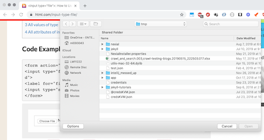
By setting this System variable as
true (default is false), Nexial will capture
the entire desktop instead of what the browser renders. Note that desktop screen capturing usually
only capture the primary screen (a.k.a. Screen 1).
nexial.screenshotInFull
web commands, the norm has been using the underlying
WebDriver's screen capturing capability. However in some situation, it might be beneficial or perhaps
necessary to screen capture the entire web page instead. By setting this System variable as
true (default is false), Nexial will capture
the entire web page instead of what the browser renders.
nexial.screenshotInFullTimeout
web commands, the norm has been using the underlying
WebDriver's screen capturing capability. However in some situation, it might be beneficial or perhaps
necessary to screen capture the entire web page instead. So, while capturing full screenshot, the timeout
needed to
load image before scrolling to next screen is specified via this variable. Default value is
5000
(in milliseconds). This system variable only comes in effect if
base » index#nexial.screenshotInFull is set
to true
nexial.screenshot.caption
When performing desktop or web automation, one can indicate the desire to capture the screenshot (of the current active desktop or application) after completing a specific test step. This is done by marking a
x on the corresponding test step (at Column L).However, one might find it useful to "annotate" the screenshots with additional text to provide further clarity or context. For example, compare the following 2 captured screenshots:


These two images are practically identical, excep the second one has additional caption at its bottom-right corner. As such, the second image provides its viewer information that may be helpful towards understanding its context or troubleshoot an underlying defect.
To generate caption, simply define the caption to use via this System variable. For example:

Notice that Nexial built-in functions are used here. One can use regular data variable, built-in functions and Nexial expression dynamically define the screen captions.
Note that, while it is possible to specify this System variable via base »
base(var,value) command, it is not
recommend because the caption will be evaluated and saved as is when the corresponding test step is
executed. Instead, define this System variable via a data file or project.properties to
maintain its dynamic value (geek term: late binding).See other
nexial.screenshot.caption.* System variables for more configuration options.
nexial.screenshot.caption.color
nexial.screenshot.caption MUST BE SET TO
true IN ORDER TO ACTIVATE THIS FEATURE.Determine the caption color to use. Choose one of the predefined colors list below:
redorangeyellow(default)greenbluecyanblackgraywhitepinkmagenta
nexial.screenshot.caption.noBackground
System variable.
nexial.screenshot.caption.alpha
nexial.screenshot.caption MUST BE SET TO
true IN ORDER TO ACTIVATE THIS FEATURE.Determine the transparency level of the caption to render. The default is
1.0, which means
"zero transparency". It is usually not recommended to change this System variable since textual transparency
might affect the readability thereof. In certain situation, such as white text on very dark images, it
might be reasonable to turn on some transparency (i.e. 0.8 for 20%).
nexial.screenshot.caption.noBackground
nexial.screenshot.caption MUST BE SET TO
true IN ORDER TO ACTIVATE THIS FEATURE.Determine if Nexial should generate the caption with a background color that is "complimentary" to the selected text color. Default is
false, which means that Nexial will generate the caption with
a complimentary background color.
nexial.screenshot.caption.position
bottom,rightnexial.screenshot.caption MUST BE SET TO
true IN ORDER TO ACTIVATE THIS FEATURE.Determine the position of the caption using one of the following positions:
top,lefttop,centertop,rightmiddle,leftmiddle,centermiddle,rightbottom,leftbottom,centerbottom,right(default)
nexial.screenshot.caption.wrap
nexial.screenshot.caption MUST BE SET TO
true IN ORDER TO ACTIVATE THIS FEATURE.If set to
true the caption text will be rendered as one contiguous line. This means that
any extraneous leading or training spaces, tabs, carriage returns and newline characters will be removed.
If set tofalse (default), then the caption will be kept as is.In either case, the caption will be rendered with text wrapping enabled as needed. See nexial.screenshot.caption for more details.
nexial.lastScreenshotx). If
nexial.outputToCloud is set to true, this
System variable will return the equivalent URL instead.
nexial.lastOutcometrue or false to indicate the outcome of the last command. This can be useful
when used as flow control condition. For example,
Since
myNumber is not 6, the assertion (2nd line) will fail. Now using the
${nexial.lastOutcome} as the condition, we can fail the entire execution when a
critical error is found.
nexial.lastPlanSteptrue or false, indicate to stop or continue the execution after the script.
This can be useful when one wants to interrupt/stop execution flow immediate after completion of the script.
This would be last step in the plan executions. This is only applicable while running a plan as only plan
will have multiple scripts. It should be set in respective data file of the script.
nexial.lastOutputLink- external » runProgram(programPathAndParms)
- image » compare(baseline,actual)
- io » compare(expected,actual,fastFast)
- io » validate(var,profile,inputFile)
- json » assertEqual(expected,actual)
- rdbms » saveResult(db,sql,output)
- rdbms » saveResults(db,sqls,outputDir)
- web » saveTableAsCsv(locator,nextPageLocator,file)
- xml » assertCorrectness(xml,schema)
${nexial.outputToCloud} is set to true) -
will be made available via this System variable as well. This may further enhances one's automation
experience since one could utilize the same output link as part of the execution.
nexial.lastOutputPath- external » runProgram(programPathAndParms)
- image » compare(baseline,actual)
- io » compare(expected,actual,fastFast)
- io » validate(var,profile,inputFile)
- json » assertEqual(expected,actual)
- rdbms » saveResult(db,sql,output)
- rdbms » saveResults(db,sqls,outputDir)
- web » saveTableAsCsv(locator,nextPageLocator,file)
- xml » assertCorrectness(xml,schema)
${nexial.outputToCloud} is set to true) -
will be made available via this System variable as well. This System variable has the same value as
nexial.lastOutputLink - BUT WITHOUT THE FILE NAME. This
may
further enhances one's automation experience since one could utilize the same output path as part of the
execution.
nexial.failAfternexial.failFast (when set to true) provides a way to terminate execution on the
first occurrence of a FAIL condition (of a command) - hence "fail-fast". In contrast, the
nexial.failAfter System variable "slows down" the execution termination by allowing for FAIL
conditions to occur. By specifying a integer value to nexial.failAfter, one can apply the idea
of "error tolerance" to prolong an execution that contains failures. A sort of a failure-grace, as it
were.
Note that this System variable supersedes
nexial.failFast, and FAIL count is not reset across
scripts, iterations or scenarios. By default, this System variable is not activated.
nexial.minExecSuccessRate
0, which is the equivalent in scripting of
"everything's fine, proceed on!". This can be very useful (and indeed necessary) for CI/CD
environment, or when a Nexial execution is part of a bigger scripting effort.By default, this system variable has a value of
100 (as in 100%). Specifying a number lower
than 100, such as 95.51 to fine tune the criteria for a SUCCESSful execution.
Mis-configured value (less than 0 or greater than 100) will be ignored.NOTE: this system variable is NOT read from data file, and MUST be specified via command line. For example,
nexial.cmd -plan ...
-override nexial.minExecSuccessRate=97.55
-override nexial.openResult=true
At the end of an execution, one may observe a printout of the SUCCESS evaluation due to this system
variable. For example,
See Exit Codes and End of Execution for more details about this topic.
nexial.executionCount
nexial.executionPassCount
nexial.executionFailCount
nexial.executionSkipCount
nexial.currentActivity
nexial.currentScenario
nexial.summary.header
One could define this System variable like the following:
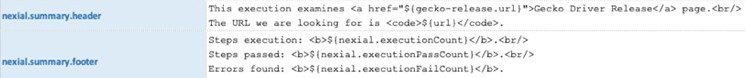
The generated execution summary would now contain the customized "header":
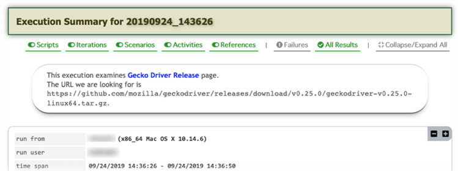
nexial.summary.footer
One could define this System variable like the following:
The generated execution summary would now contain the customized "footer":
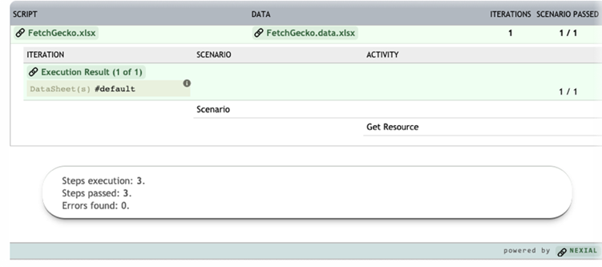
nexial.manageMemory-override or set JAVA_OPT=-D...To turn on this variable, one must set the
-D environment variable prior to executing a test
run. For example:
[on Windows]:

[on OSX]:

nexial.manageMemory=true), Nexial will conduct garbage collection (GC) to reclaim any
unused heap memory after the completion of each test script execution. You will see something similar as
the following, which show that GC was executed and the memory footprint changes between the GC.
At the end of the entire execution, Nexial also print out a summary of the memory usage between different test scenarios:

nexial.assistantModenexial.openResult INSTEAD.
nexial.openResultThis configuration is forcefully turned off during remote execution.
nexial.spreadsheet.program
nexial.openResult is enabled. By
default, Nexial will invoke Microsoft Excel to open the execution output in context.However, should you choose to use another program, such as WPS, specify this variable in your data sheet. For example,

Alternatively, one can simply specify
wps, which will enable Nexial to automatically resolve
the correct location of WPS (latest version preferred). For example,
nexial.step.response
step and
step.inTime are designed for automation where human
interaction
(or intervention) is needed. As such, these commands prompt for user input in the form of a "response"
and/or
"comment".This System variable captures the "response" provided by the user during the execution of such command. One may include the content of this System variable as part of the automation. For example, the "response" can be included in an email generation or an output file.
nexial.step.comment
step and
step.inTime are designed for automation where human
interaction
(or intervention) is needed. As such, these commands prompt for user input in the form of a "response"
and/or
"comment".This System variable captures the "comment" provided by the user during the execution of such command. One may include the content of this System variable as part of the automation. For example, the "comment" can be included in an email generation or an output file.
nexial.assert.lenient
nexial.assert.asNumber
1 would be treated the same as 1.0.Note that setting this System variable to
true (default) does not render any text into a
number.
Only those of valid numeric form (decimals ok) will be converted into numbers.
nexial.assert.useTrim
false (no trimming).
nexial.assert.caseInsensitive
false.
nexial.recordingEnabled
project.properties.
This can be useful when toggling between environments where screen recording is not ideal (such as
CI/CD).NOTE: by default if no system variable defined, recording is set to true (enabled) by default
nexial.recordingAutostart
startRecording and
base » stopRecording.Currently the only event supported is
execution. By assigning execution to this
System variable, Nexial will automatically start the desktop recording at the execution of the first command.
Future releases of Nexial will support automatic screen recording based on other events such as:
- when a script is being executed -- effectively create new recording per script
- when a scenario is being executed -- effectively create new recording per scenario
- when a new iteration commenced -- effectively create new recording per iteration
One can consider using System variable at command line or in a batch file. For example,
cd $NEXIAL_HOME
cd bin
nexial.cmd -script C:\projects\X\artifact\script\Y.xlsx -override nexial.recordingAutostart=execution
By default, this System variable is assigned the value
none.
nexial.screenRecordermp4 (default) or avinexial.number.rounding
This System variable can be configured as one of the following:
nexial.number.rounding |
description |
|---|---|
ROUND_UP (default) |
Round a decimal number up, if its fractional portion is ≥ 0.5. This is probably the common approach towards decimal rounding. For more information, see Javadoc for RoundingMode.HALF_UP. |
ROUND_DOWN (default) |
Round a decimal number down, if its fractional portion is <= 0.5. For more information, see Javadoc for RoundingMode.HALF_DOWN. |
ROUND_EVEN (default) |
It is sometimes known as "Banker's rounding," and is chiefly used in the USA. For more information, see Javadoc for RoundingMode.HALF_EVEN. |
nexial.enableEmail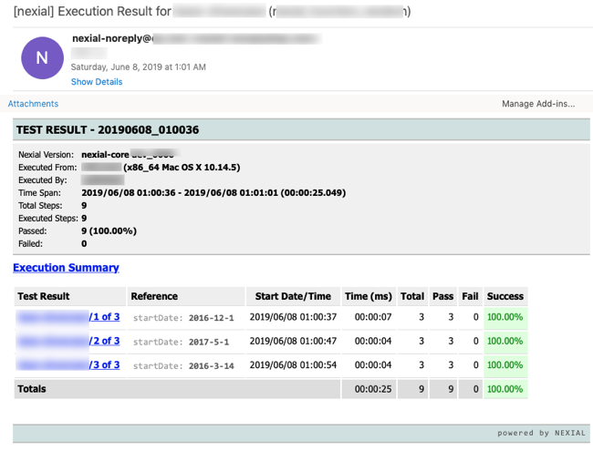
Note that the "Reference" column reflects the
nexial.scriptRef.*
values defined for each script/iteration.Here are the steps:
- Enable this system variable
- Define the mail server connectivity details:
nexial.mail.smtp.host- the hostname or DNS name of your mail servernexial.mail.smtp.port-25(or whatever the configured SMTP port)nexial.mail.smtp.from- the FROM email addressnexial.mail.smtp.auth-true|falsenexial.mail.smtp.username- username only needed ifnexial.mail.smtp.authis set totruenexial.mail.smtp.password- password only needed ifnexial.mail.smtp.authis set totrue
- Define the recipient email or list via the
nexial.mailToSystem variable.
JAVA_OPT=-D... or -override
flag),
project.properties
or the appropriate data file. For example, from command line:nexial.sh -script ... ... \
-override nexial.enableEmail=true \
-override nexial.mail.smtp.host=mail.mycompany.com \
-override nexial.mail.smtp.auth=false \
-override nexial.mailTo=me_and_myself@mycompany.com
nexial.mailTonexial.enableEmail MUST BE SET TO
true IN ORDER TO ACTIVATE THIS FEATURE.A comma-separated list of email addresses to receive Nexial's email notification at the end of an execution.
Note that this System variable, along with
nexial.enableEmail are both required for Nexial
to send out post-execution email notification.
nexial.mailSubjectnexial.enableEmail MUST BE SET TO
true IN ORDER TO ACTIVATE THIS FEATURE.Customized/optional mail subject instead of the default one. The inclusion of data variable, Nexial Expression and built-in function is possible to achieve a highly dynamic and expressive email subject. However this might not resolve to the desired value since this System variable is resolved in the beginning of the execution, not the end.
Note that Nexial's post-execution email subject will STILL be prefixed with
[nexial] to
indicate the source of such email - i.e. [nexial] your customized subject ...For example,
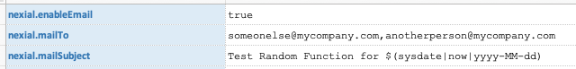
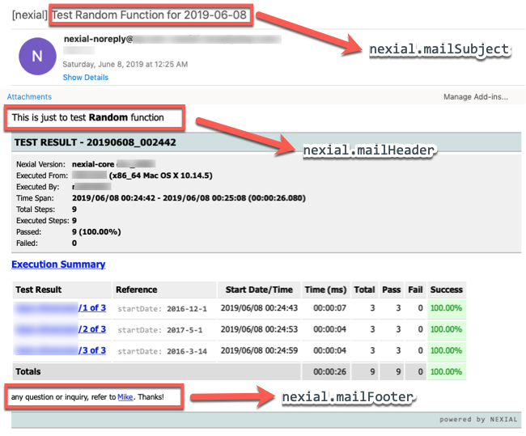
nexial.mailSubject.withSynopsis
nexial.enableEmail MUST BE SET TO
true IN ORDER TO ACTIVATE THIS FEATURE.Customize the system generated mail subject by adding a short "synopsis" of the overall execution. If this System variable is set to
true (default), then Nexial will include either a postfix to the mail
subject:
ALL PASS- to represent that the corresponding execution has no failed step.FAIL (...% success)- to present that some of the steps in the corresponding execution failed.
nexial.mailHeadernexial.enableEmail MUST BE SET TO
true IN ORDER TO ACTIVATE THIS FEATURE.
Customized/optional "header" message to be included in Nexial's post-execution email notification. The inclusion of data variable, Nexial Expression and built-in function is possible - as well as the use of HTML. However this might not always resolve to the desired value since this System variable is resolved in the beginning of the execution, not the end.
This can be useful towards including a custom-crafted "header" message to provide additional context of the execution. For example,
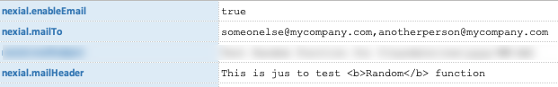
nexial.mailFooternexial.enableEmail MUST BE SET TO
true IN ORDER TO ACTIVATE THIS FEATURE.
Customized/optional "footer" message to be included in Nexial's post-execution email notification. The inclusion of data variable, Nexial Expression and built-in function is possible - as well as the use of HTML. However this might not always resolve to the desired value since this System variable is resolved in the beginning of the execution, not the end.
This can be useful towards including a custom-crafted "footer" message to provide additional context of the execution. For example,
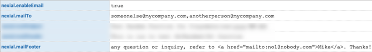
nexial.timetrack.trackExecution
Time Tracking
Label for this will be run id which is in timestamp format and remark will be Execution ended.
nexial.timetrack.trackScript
Time Tracking. Label for this will be script
name and remark will be Script ended.
nexial.timetrack.trackIteration
Time Tracking. Label for this will be in the form of
scriptName#currentIteration and the remark will be Iteration ended.
nexial.timetrack.trackScenario
Time Tracking
Label for this will be scriptName#scenario and remark will be Scenario ended.
nexial.timetrack.format
START_DATE|START_TIME|END_DATE|END_TIME|ELAPSED_TIME|THREAD_NAME|LABEL|REMARK.
For more information on time tracking, see Time Tracking
nexial.expression.OpenFileAsIs
nexial.resolveTextAsIs INSTEAD.
nexial.expression.resolveURL
nexial.resolveTextAsURL INSTEAD.
nexial.expression.web.alwaysNew
true means all the
invoked operations were executed successfully. For example,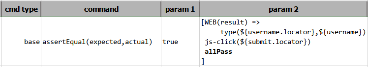
In the above example, the variable
result holds the outcome of each of the operations within
the same WEB expression. It is possible to query to outcome of each operation via the standard
${...}.[property] syntax. See
Working with Execution Result
for more details.Suppose one would to reuse the same variable (in the above example,
result) for another WEB
expression. In such case, Nexial will append the outcome of the operations in the subsequent WEB expressions
into the same variable, and thus "taint" the same variable with the execution of disparate WEB expressions.
At times, this may be intentional. However, quite often this is not the case.By default, Nexial will append the outcome of the operations in subsequent WEB expressions to the same variable (if the same variable name is used). To avoid this, one would need to either use a different variable name or to clear out the variable in question prior to the subsequent use of WEB expression.
With this System variable -
nexial.expression.web.alwaysNew - Nexial can now automatically
clear off the specified variable in a WEB expression. By setting this System variable as true,
each WEB expression will be started off with "clean slate". Therefore, subsequent use of the same variable
in WEB expression will not result in the outcome being grouped together across WEB expression.By default, this System variable is set to
false.
nexial.scope.iteration
nexial.scope.iteration |
meaning |
|---|---|
| 1 | execute the first iteration |
| 1,3,5,7 | execute the first, the third, the fifth and the seventh iteration |
| 1-10,14,99 | execute iteration 1 through 10, then iteration 14 and then iteration 99. |
| 1,1,1,2-5,5-3 |
execute iteration 1 three times, then iteration 2 through 5, then iteration 5, iteration 4,
iteration 3. IOW, execution iteration 1, 1, 1, 2, 3, 4, 5, 5, 4, 3. |
| B-D,Z-AA,C-19 |
execute:
|
nexial.scope.fallbackToPrevious
nexial.scope.currentIteration
nexial.scope.currentIterationId
nexial.scope.lastIteration
nexial.scope.isFirstIteration
true to indicate that the current iteration is the first iteration of the corresponding
script.
nexial.scope.isLastIteration
true to indicate that the current iteration is the last iteration of the corresponding
script.
nexial.scope.refetchDataFile
However, at times one might have the intention not to do so in order to preserve the changes made to data variables from one iteration to the next. In such case, one should set
nexial.scope.refetchDataFile as false.
nexial.scope.required.variables
At times one might intent to assign one or more data variables at runtime (such as date or realtime data). One can use this System variable to enforce user input accordingly.
For example, using web »
open(url) in web
automation, URL is necessary to execute subsequent web commands. In such case, one would include the
respective variable as required using the nexial.scope.required.variables System variable.
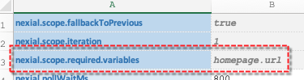
During execution, if Nexial detect that such variable (
homepage.url) is not yet defined, a
console prompt will be rendered to solicit user's input: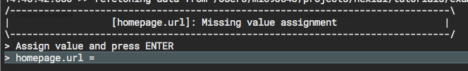
NOTE:
nexial.scope.fallbackToPrevious
is applicable on the variables assigned from console prompt too.
Like most interactive feature, this variable is disabled - by design - when Nexial is executing in CI/CD environment (e.g. Jenkins).
base » repeatUntil(steps,maxWaitMs) command only.
nexial.repeatUntil.index
base »
repeatUntil(steps,maxWaitMs).
During the execution of a
repeat-until loop, Nexial will keep track of the loop occurrence (
in effect, the loop counter) and update this System variable accordingly. At the end of a
repeat-until loop, this System variable will continue to be available for the subsequent test
step.
It is, however, subject to being overwritten once the next instance of repeat-until loop
commence.
This System variable is 1-based (first loop is considered as
1).
nexial.repeatUntil.startTime
base »
repeatUntil(steps,maxWaitMs)
instance. At the start of the next repeat-until loop, this System variable will be overwritten.nexial.repeatUntil.endTime
base »
repeatUntil(steps,maxWaitMs)
instance. This System variable is not an indication of the status of a repeat-until loop; it
will be
updated at the end of a repeat-until loop regardless of its PASS/FAIL outcome.io or csv
content comparison only.
nexial.compare.textReport
true (default), content comparison will produce a text-based comparison report at the end.
The report is stored in the output directory (along with other test output) or in the cloud
(if nexial.outputToCloud is true) and will be downloadable via the execution output:
By default, this system variable is
true. See
io »
compare(expected,actual,failFast)
for details.
nexial.compare.jsonReport
true, content comparison will produce a JSON-based comparison report at the end. The report
is stored in the output directory (along with other test output) or in the cloud (if
nexial.outputToCloud is true) and will be downloadable ia the execution output:
By default, this system variable is
false. See
io »
compare(expected,actual,failFast)
for details.
nexial.compare.htmlReport
true, content comparison will produce a HTML comparison report at the end. The report is
stored in the output directory (along with other test output) or in the cloud (if
nexial.outputToCloud is true) and will be downloadable ia the execution output:
By default, this system variable is
false. See
io »
compare(expected,actual,failFast)
for details.
nexial.compare.reportMatch
compare(expected,actual,failFast)
for details.
nexial.io.eolConfigwriteFile(file,content,append) or
io »
writeFileAsIs(file,content,append)
commands. Possible options are:as is- no change to the EOL characters in the source contentplatform- change EOL characters in accordance to the executing operating systemwindows- change EOL characters to Window format (\r\n)unix- change EOL characters to *NIX/Mac format (\n)
nexial.io.copyConfigkeepOriginalcopyFilesByRegex(sourceDir,regex,target) or
io »
copyFiles(source,target) or
io »
moveFilesByRegex(sourceDir,regex,target)
io »
moveFiles(source,target)
commands. Possible options are:keepOriginal- no change to existing file. `copy` or `move` operation not performedbackup- take backup of existing file and copy the new file. Backup file will have name in `FILENAME - [yyyyMMdd_hhmmss] format.override- override existing file with new file
nexial.io.matchRecursive
saveMatches(var,path,fileFilter,textFilter)
command. By default, Nexial will scan the specified path recursively. If need be, one may set
this
System variable as false to instruct Nexial to scan only the specified directory.
keepOriginal- no change to existing file. `copy` or `move` operation not performedbackup- take backup of existing file and copy the new file. Backup file will have name in `FILENAME - [yyyyMMdd_hhmmss] format.override- override existing file with new file
nexial.io.matchIncludeDirectories
saveMatches(var,path,fileFilter,textFilter)
command. By default, Nexial will scan only files under the specified path. If need be, one may
set this System variable as tue to instruct Nexial to scan both files and subdirectories under
the specified directory.
nexial.io.matchExactio » copyFilesByRegex(sourceDir,regex,target)io » deleteFilesByRegex(sourceDir,regex)io » moveFilesByRegex(sourceDir,regex,target)
When set to
true, Nexial will perform file name matches based on "exact" match. This means that
the file name would need to match exactly the specified regular expression to be considered eligible for the
corresponding command. For example, consider the following files:
FileA.txt FileB.txt B.txt A.txtSuppose the specified regular expression is
[A-Z]\.txt, then only the last 2 files will be
considered as matches since only these 2 are exactly "one character followed by .txt".
However, if this System variable is set to
false (default), then all 4 files would be
considered as matches since they all "partially" qualifies for the [A-Z]\.txt pattern.
nexial.csv.maxColumns
csv command or
via CSV expression. The default value is 512.
nexial.csv.maxColumnWidth
csv command
or via CSV expression. The default value is 4096.
nexial.json.treatJsonAsIs
["Apple","Orange","Banana"]While this is perhaps more correct, it is at times more convenient to store the same information simply as a list, like so:
[Apple,Orange,Banana]In doing so, we could further simplify the automation of parsing or comparison.
The purpose of this System variable is to do exactly that. By default, this System variable is set to
true - default behavior to keep extracted JSON fragments as "real" JSON as possible. When this
System variable is set to false, Nexial will remove double quotes (shown above) from the
extracted text data.
nexial.json.lastCompareResults
assertEqual(expectedJson,actualJson) only.Invoking json »
assertEqual(expectedJson,actualJson) could reveal the structural differences between
the "expected" and "actual" JSON documents. Such differences are stored in yet another JSON document so that
one can further automate against the differences found. One can use this System variable to retrieve this
"diff" JSON.Note that one might want to consider using
nexial.lastOutputLink to retrieve the file that
contains the "diff" JSON document.See
nexial.json.compareResultsAsJSON,
nexial.json.compareResultsAsCSV and
nexial.json.compareResultsAsHTML for
report format. These report output optional are not mutually exclusive.
nexial.json.compareResultsAsJSON
assertEqual(expectedJson,actualJson) only.Used to instruct Nexial on the report format of the comparison result (differences between
expected and actual). By default, Nexial will generate the comparison result
as a JSON document, and link such file in the execution output. One may alter this System variable to
disable such default.See
nexial.json.compareResultsAsCSV and
nexial.json.compareResultsAsHTML for other
report format. These report output optional are not mutually exclusive.
nexial.json.compareResultsAsCSV
assertEqual(expectedJson,actualJson) only.Used to instruct Nexial on the report format of the comparison result (differences between
expected and actual). By default, Nexial will generate the comparison result
as a JSON document, and link such file in the execution output. One may alter this System variable to
disable such default and generate the comparison result as CSV instead.See
nexial.json.compareResultsAsJSON and
nexial.json.compareResultsAsHTML for
report format. These report output optional are not mutually exclusive.
nexial.json.compareResultsAsHTML
assertEqual(expectedJson,actualJson) only.Used to instruct Nexial on the report format of the comparison result (differences between
expected and actual). By default, Nexial will generate the comparison result
as a JSON document, and link such file in the execution output. One may alter this System variable to
disable such default and generate the comparison result as HTML instead.Note that the generated HTML is a basic HTML table where such table is assigned a style class named
compare-result-table. One may choose to decorate this table by add CSS stylsheets to
table.compare-result-table. See json
»assertEqual(expectedJson,actualJson) for examples.See
nexial.json.compareResultsAsJSON and
nexial.json.compareResultsAsCSV for
report format. These report output optional are not mutually exclusive.
external testing only.
nexial.external.output
runProgram(programPathAndParms) command.When executing the external »
runProgram(programPathAndParms) command, Nexial also captures the output (standard
out) created by target external program. The captured output is then stored to the output directory
(as in $(syspath|output|fullPath)) and linked to the execution output.With the captured output filename derivable via this system variable, one can further the automation with regards the captured output.
nexial.external.console
nexial.external.workingDirectory
excel commands and
[EXCEL] expression only.
nexial.excel.recalcBeforeSave
true could potentially slow down the file saving process. By default this System variable is
set to false.
Note that for [
EXCEL] expression, the target Excel
file is not automatically saved after each write operation
(e.g. EXCEL » writeAcross(start,value1,value2,value3,...). One would need to explicitly
invoke
the EXCEL » save(file,sheet,start) operation to trigger the recalculation.
nexial.excel.retainCellType
true (default to
false).
Note that Nexial's attempt to retain the cell data type is limited. At this time it can handle
NUMERIC, BOOLEAN and TEXT. Special data type of FORMULA,
DATE, OLE, etc. are currently not support.
nexial.browserfirefoxfirefox.headlesschromechrome.headlesschrome.embeddedelectronsafariieedgeedgechrome-
browserstack(see below forbrowserstack.*variables) -
crossbrowsertesting(see below forcbt.*variables)
nexial.delayBrowser
open() is invoked.
Generally one would not need to worry about this. Change this ONLY IF YOU KNOW WHAT YOU ARE
DOING!
nexial.enforcePageSourceStability
false by default to improve overall
execution performance. It is determined that this System variable would be most applicable for web
applications that contain one or more active background AJAX calls after the current page is loaded. As
such, the "stability" of the corresponding web page might require the background AJAX calls to complete.
Setting this System variable to true would be helpful in such instance.
However, such behavior isn't common amongst most web application and hence this System variable is set to
false by default.
Determine the browser page stability during test execution. Generally most of the modern web applications are rich in interactivity which require some background proceed to be completed when page gets loaded. But older or simpler web applications do not have such requirement. For such case, one can use this system variable to speed up test automation.
true and will ensure that the web page in question is
stabilized before proceeding to next command.
false, this enforcement will be omitted. For example:
See
nexial.waitSpeed for more control over this "stability
wait".
nexial.waitSpeednexial.uiRenderWaitMsnexial.pollWaitMsNote that as per WebDriver specification, the poll wait time is only set once per initial use of a browser- specific webdriver instance.
nexial.web.unfocusAfterType
By default, this System variable is set to
false. Setting it to true would enable
the "unfocus-after-typing" behavior, which effectively adds a TAB key after entering the specified input.
nexial.web.clearWithBackspace
BACKSPACE key.This is not usually needed. However some web application contains fairly persistent and intrusive event handler (or listener) that could circumvent the act of clearing out the corresponding input via the conventional way (i.e. Selenium's
WebElement.clear()). Nexial can simulate user behavior by
issuing the BACKSPACE keystroke against any existing character found in the target INPUT
element. In some instances, this proves to be more effective, albeit possibly slower in performance.
nexial.web.useReact
true, Nexial can make the necessary adjustments accordingly.Specifically, if this System variable is set to
true, then
-
Any of the "click" commands will be performed without the use of JavaScript. Instead, Nexial will
enforce the use of standard Selenium click action. This is known to be a more stable approach for
React applications. Note that this is equivalent to setting
nexial.browser.forceJSClick to
false. -
Any of the "type" commands will ensure that existing value in the target element is cleared by
using
BACKSPACEkeystroes, instead of the standard Seleniumclearcommand. This is only applicable to theINPUTandTEXTAREAelement. React applications tend not to react (no puns...) favorably to the Seleniumclearcommand. By setting this System variable totrue, Nexial will enforce the clearing of existing value withBACkSPACEkeystrokes instead. Note that this is equivalent to settingnexial.web.clearWithBackspacetotrue.
By default, this System variable is set to
false. If you are automating against a React
application, set this System variable to true.
nexial.web.preemptiveAlertCheck
web commands only). When set to true, Nexial will check for the
presence of JavaScript alert/confirm/prompt dialog after a web command (such as click or type) and before
executing any of the waitFor... commands (such as
web »
waitForElementPresent(locator)).
If found, Nexial will harvest the text of the JavaScript dialog as nexial.lastAlertText, and
dismiss the dialog box as well, before proceeding on.While this behavior provides convenience, it is not without performance overhead. In order for Nexial to dismiss JavaScript dialog, it has to inquire via the underlying web driver against the browser in automation. Depending on the browser, this could take a few milliseconds to roughly half a second. For long-running automation, this overhead might be significant.
By default, this System variable is set as
false, which means Nexial will not proactively check
and
dismiss JavaScript dialog after a web command (e.g. click or type). Since most modern-day web applications
do not
employ the use of JavaScript dialog (such as alert('...')), it is likely a good idea to leave
this
feature off. Our rudimentary tests show a 12 - 20% time improvement when this feature is turned off, most
noticeably when running under IE.
nexial.web.alwaysWaitnexial.web.explicitWait INSTEAD.
When set to true, Nexial will enable explicit wait during Web automation with a poll of 10 ms
until the corresponding condition is reached or the value of
nexial.pollWaitMs is reached.. This technique can help reduce
the use of implicit wait, which can be unreliable.The default is
false.
nexial.web.explicitWait
true (default), Nexial will enable
explicit wait during Web automation with a poll of 10 ms until the
corresponding condition is met or the value ofnexial.pollWaitMs
is reached. This technique can help reduce the use of implicit wait, which can be unreliable and is known
as a chief source of test flakiness.Technically speaking, Nexial implements fluent wait, which is essentially a more flexible form of explicit wait. Using this technique, we can overcome the infamous "stale element exception" as well.
This System variable supersedes the now-deprecated
nexial.web.always (since
Nexial v4.0)The default is
true.
nexial.web.pageLoadWaitMs
open(url) is
considered as FAIL. If the timeout is negative, page loads can be indefinite.
nexial.browser.postCloseWaitMs
3000, which means the execution of
web » close() on the last browser window will add 3
seconds
by default to the overall execution time.
nexial.browser.incognito
true.Due to a known/unresolved issue with chrome, if your tests requires resizing or maximizing target browser, the recommendation is to set this variable to
false.
nexial.browser.windowSize
width/height during runtime.
In order to have a consistency, it is recommended to define browser height and width as desired initial
browser window size.For headless (
chrome.headless and firefox.headless) this is a
MUST.
If no window size is provided, Nexial will default the window size for the headless browser to
1200x900.For regular UI browser if window size not provided, it will execute whatever window size determined by the target browser found during execution.
Dimension format as follows:
- Expects lowercase "x" is allowed between width and height.
(e.g
1048x900). - Neither height nor width can be set to a value less than 100.

nexial.browser.windowPosition
x value in pixel,y value in pixelThe default value is
0,0, which means top-left corner of the primary monitor. Specifying
640,1 on a screen resolution of 1280x960 would put the browser window on the right side of the
screen.
nexial.browser.downloadTo
$(syspath|out|fullpath)Specify the location to save any files downloaded from the current browser. By default, the download location is set to the output directory of the corresponding execution.
This System variable is read during browser initialization. Any changes to this System variable after browser initialization will have not effect until the execution is restarted.
nexial.browser.downloadPdf
Specify if a PDF document encountered during automation would be display in the browser or downloaded (to
nexial.browser.downloadTo). By default, Nexial
will download PDF to disk rather than open the said PDF document to be opened in the current browser. In
many situations it is more beneficial to download the PDF. One can utilize the
pdf commands for additional automation.Note that when this System variable is set to
false, PDF documents will open on the current
browser. By default Nexial will download PDF documents to
nexial.browser.downloadTo, which, by default, is set
to $(syspath|out|fullpath).
nexial.browser.forceJSClick
WebElement) for click event. This generally
works. However with the combination of a certain browser and certain web application, timing sometimes work
against expectation. Such anomaly is especially noticeable with IE and AJAX-rich web applications (from
which timing might be less than predictable). To circumvent this issue, one may turn on the feature of
forcefully issuing click event via JavaScript by setting nexial.browser.forceJSClick to
true.Consequently, this feature is also effective as a workaround for IE to handle the click event on a target inside an iframe, which can be particularly problematic when the click event triggers a 'File Download' that in turn triggers a IE-only 'Download Notification' outside of the iframe.
nexial.browser.geolocation
true to enable geo-location support on the target browser. This would enable
geo-location detection, which could possibly alter the behavior of the web application under test.Currently only the Chrome and Firefox browsers are support for this feature.
nexial.browser.geolocation.longitude
nexial.browser.geolocation.latitude to
simulate a different geo location - a.k.a. location faking.To find the corresponding longitude and latitude via address, consider using the following websites:
Get Lat Long from Address
GPS Coordinates
Currently only the Chrome and Firefox browsers are support for this feature.
nexial.browser.geolocation.latitude
nexial.browser.geolocation.longitude to
simulate a different geo location - a.k.a. location faking.To find the corresponding longitude and latitude via address, consider using the following websites:
Get Lat Long from Address
GPS Coordinates
Currently only the Chrome and Firefox browsers are support for this feature.
nexial.browser.meta
nexial.ignoreBrowserAlert
nexial.lastAlertTextwebalert commands only). The text of the
last javascript alert found during test execution. For example:
nexial.web.highlight
nexial.highlight FOR CONSISTENCY AND PROPER NAMESPACING.
Highlight each web form element as an automation action is performed on it. These automation actions are typically some form of clicking or typing. "Mouseover" will not trigger such highlighting.
Currently the highlight style is set to
background:#faf557 (default for
nexial.web.highlight.style) for a period of
250ms (default for
nexial.web.highlight.waitMs). The "flashing yellow effect" (default style) is meant as a visual indicator of a test execution in progress. Here's an example (where the field
Joe is highlighted):
nexial.web.highlight.waitMs
nexial.highlightWaitMs FOR CONSISTENCY AND PROPER NAMESPACING.
The amount of time, in milliseconds, before the highlight effect is removed and the style of target web element restored. This is only effective when
nexial.web.highlight is set to true.
nexial.web.highlight.style
background: #faf557nexial.web.highlight is set to true.
nexial.web.scrollIntoView
true (which is the default), Nexial will attempt to adjust
the position of target web element (like scrolling the page) such that it would be visible prior to carrying
out the automation. However in some cases this preemptive "scrolling" might work against intended use as
some web elements might be too big to fit the available view area. In addition, the additional scrolling
could be considered unnecessary when automating via headless browser.
One can set this System variable to false to reduce such scrolling, which can also speed up
automation a bit.
This is applicable to
web » type(locator,value)web » typeKeys(locator,value)web » click(locator)web » doubleClick(locator)- and all the derivatives of these commands
nexial.web.dragFrom
web » dragTo(fromLocator,xOffset,yOffset)
for more details.
nexial.web.dragNative
dragAndDrop(fromLocator,toLocator) and
web » dragTo(fromLocator,xOffset,yOffset) commands should be performed via native
mouse event (meaning: the actual "mouse-click-drag-move-then-drop") or via the WebDriver simulation
(default).
This is not often required (nor recommended) as setting the "native" mode will interrupt one's use of the mouse device during the execution of either aforementioned commands. Not so much of an issue when running one's automation via remote terminals. But this might result in some minor annoyance when automating via one's laptop/workstation.
Running the drop-and-drop functionality using native mouse event is needed at times. This is especially true when the target web application drastically change either the source or the target web element during the drag-and-drop event, or if a new web element is generated (often as a visual cue) during the drag-and-drop.
By default this System variable is set to false. When setting this System variable to true, one might want to consider the following System variables as well:
nexial.web.dragNativeXOffset
true.
The idea behind this System variable is to provision control over one's browser. For example, one may have the browser configured with a thicker border. Using this System variable to take into account the additional value that the browser might have taken in the x-axis.
By default this System variable is set to
0.
nexial.web.dragNativeYOffset
true.
The idea behind this System variable is to provision control over one's browser. For example, one may have the browser configured additional icons or a "taller" title bar. Using this System variable to take into account the additional value that the browser might have taken in the y-axis.
By default this System variable is set to
80 since almost all browser would have title bar,
the address/location bar, etc.
save...AsCsv() commands only.
nexial.web.saveGrid.deepScan
saveTableAsCsv(locator,nextPageLocator,file)
saveDivsAsCsv(headers,rows,cells,nextPage,file)
<th>,
<td>, or <div>) with text content will be captured into CSV. Data cell
with web elements such as checkbox, drop down list (a.k.a. pick list), text box, image, etc. are thus
ignored.By setting this System variable to
true (default is false), Nexial will activate
additional scanning of these non-text web elements and capture the corresponding metadata into CSV.
Precisely which metadata to capture will be determine by the additional System variables:
nexial.web.saveGrid.header.inputnexial.web.saveGrid.header.imagenexial.web.saveGrid.data.inputnexial.web.saveGrid.data.image
nexial.web.saveGrid.header.input
namesaveTableAsCsv(locator,nextPageLocator,file)
saveDivsAsCsv(headers,rows,cells,nextPage,file)
Note that
nexial.web.saveGrid.deepScan must be set to true in order for System
variable to take effect.
When "deep scan" is activated (see nexial.web.saveGrid.deepScan), one can determine what Nexial should capture when it encounters HTML form element such as:
- check box
- radio button
- text box
- text area (for multi-line editing)
- button
- dropdown list (a.k.a. pick list)
save...AsCsv() commands. The default value for this
System variable is name.Possible choices are:
| configured value | explanation |
|---|---|
| name | Capture the value to the "name" attribute of the web element in question. If this web element does have "name" attribute defined, an empty string will be used instead. |
| type |
Capture the type of web element in question. For HTML form input:
checkboxradiotexttextareabutton or submit or resetselect-single or
select-multiplefile |
| value | Capture the value of the "value" attribute of the web element in question. If this web element does have "value" attribute defined, an empty string will be used instead. |
| id | Capture the value of the "id" attribute of the web element in question. If this web element does have "id" attribute defined, an empty string will be used instead. |
| state |
Capture the "state" of the web element in question, as close to its visual presentation as
possible.
checked or uncheckedselected or unselected |
nexial.web.saveGrid.header.image
typesaveTableAsCsv(locator,nextPageLocator,file)
saveDivsAsCsv(headers,rows,cells,nextPage,file)
Note that
nexial.web.saveGrid.deepScan must be set to true in order for System
variable to take effect.
The default value for this System variable is
type, which will have the value
image.
Possible choices are:
| configured value | explanation |
|---|---|
| name | Capture the value to the "name" attribute of the web element in question. If this web element does have "name" attribute defined, an empty string will be used instead. |
| type | image |
| alt | Capture the value of the "alt" attribute of the image element in question. If this image element does have "alt" attribute defined, an empty string will be used instead. |
| id | Capture the value of the "id" attribute of the image element in question. If this image element does have "id" attribute defined, an empty string will be used instead. |
| filename | Capture the file name of the image element in question. Note that this is not the fully qualified resource locator (i.e. URL), but simply the file name with extension. |
nexial.web.saveGrid.data.input
statesaveTableAsCsv(locator,nextPageLocator,file)
saveDivsAsCsv(headers,rows,cells,nextPage,file)
Note that
nexial.web.saveGrid.deepScan must be set to true in order for System
variable to take effect.
Possible choices are:
| configured value | explanation |
|---|---|
| name | Capture the value to the "name" attribute of the web element in question. If this web element does have "name" attribute defined, an empty string will be used instead. |
| type |
Capture the type of web element in question. For HTML form input:
checkboxradiotexttextareabutton or submit or resetselect-single or
select-multiplefile |
| value | Capture the value of the "value" attribute of the web element in question. If this web element does have "value" attribute defined, an empty string will be used instead. |
| id | Capture the value of the "id" attribute of the web element in question. If this web element does have "id" attribute defined, an empty string will be used instead. |
| state |
Capture the "state" of the web element in question, as close to its visual presentation as
possible.
checked or uncheckedselected or unselected |
nexial.web.saveGrid.data.image
typesaveTableAsCsv(locator,nextPageLocator,file)
saveDivsAsCsv(headers,rows,cells,nextPage,file)
Note that
nexial.web.saveGrid.deepScan must be set to true in order for System
variable to take effect.
Possible choices are:
| configured value | explanation |
|---|---|
| name | Capture the value to the "name" attribute of the web element in question. If this web element does have "name" attribute defined, an empty string will be used instead. |
| type | image |
| alt | Capture the value of the "alt" attribute of the image element in question. If this image element does have "alt" attribute defined, an empty string will be used instead. |
| id | Capture the value of the "id" attribute of the image element in question. If this image element does have "id" attribute defined, an empty string will be used instead. |
| filename | Capture the file name of the image element in question. Note that this is not the fully qualified resource locator (i.e. URL), but simply the file name with extension. |
nexial.web.saveGrid.data.trim
saveTableAsCsv(locator,nextPageLocator,file)
saveDivsAsCsv(headers,rows,cells,nextPage,file)
Determine if the captured data should be trimmed before saving to CSV file. Default is
true.
nexial.web.saveGrid.end.trim
saveTableAsCsv(locator,nextPageLocator,file)
saveDivsAsCsv(headers,rows,cells,nextPage,file)
Determine if the CSV file should be ended with a line feed or not. This can help to shape the CSV file to ease the analytical or comparison work to follow. The default is
false, which means that a
line feed will be added to the end of the CSV file.
nexial.browser.safari.useTechPreview
nexial.browser is set to safari.Instruct Nexial to use the Safari Technology Preview if this system variable is set to
true, otherwise use the release version of Safari (default). Set this system variable to
true ONLY the executing host has
Safari Technology Preview properly installed.
nexial.browser.electron.forceTerminate
closeAll()true (default is false).
nexial.browser.logElectronnexial.browser System variable must be set to electron. When enabled, Nexial will
create under the log directory of the execution output directory a log file named as
electron-[application].log, where [application] is the name of the application
under test. This file will contain the webdriver logs during automation, and will be linked in the
#summary tab of the execution report (.xlsx) under the logs section.While not usually needed, webdriver log contain be very useful towards troubleshooting and debugging intercommunication issues between webdriver and AUT.
nexial.browser.logElectronVerbose
nexial.browser.logElectron IS SET TO trueEnable/Disable verbose webdriver logging when automating against an Electron application. By default, this System variable is
false.While not usually needed, turning on verbose mode might be useful towards troubleshooting and debugging intercommunication issues between webdriver and AUT.
nexial.browser.logChrome
nexial.browser
System variable must be set to chrome or chrome-headless. When enabled, Nexial
will create under the log directory of the execution output directory a log file named as
chrome-browser.log. This file will contain the webdriver logs during automation, and will be
linked in the #summary tab of the execution report (.xlsx) under the logs
section.While not usually needed, webdriver log contain be very useful towards troubleshooting and debugging intercommunication issues between webdriver and the Chrome browser.
nexial.browser.logEdge
nexial.browser System variable must be set to edgechrome. When enabled, Nexial
will display the log generated by the Edge browser on the console, as well as the Nexial log file in the
log directory under the output directory.While not usually needed, webdriver log contain be very useful towards troubleshooting and debugging intercommunication issues between webdriver and the Chrome browser.
nexial.browser.userData
nexial.browser). The user profile usually store cookies, caches and user preferences, which
can be used to test various scenarios such as "repeated visits" or "first-time visitor". Note that:
- user profile directory is browser specified
- user profile directory is platform-specified
- user profile directory is not applicable for IE, Edge or Safari browser
- when specified, this System variable will override the
nexial.browser.incognitoSystem variable (default isfalse).
nexial.forceIE32This system variable instructs Nexial on which version of IEDriverServer to use for Internet Explorer. IEDriverServer is a resident program that translates Selenium commands (sent through Nexial) into automation events on Internet Explorer. Setting this system variable to
true (default) would force the use the 32-bit version of IEDriverServer;
false would instruct Nexial to use the 32-bit version for the 32-bit Windows OS and 64-bit
version for 64-bit Windows OS.It has come to light that Internet Explorer in pre-Windows10 installation are NOT truly 64-bit. The Internet Explorer "shell" program is a 64-bit process - meaning the main window, the address bar, navigation buttons, menu, etc.). However the individual tabs - where the web page content is rendered - are still 32-bit process. As such, if we use the 64-bit IEDriverServer process, each interaction to the web page would cause an additional execution buffering and translation between the 64-bit and 32-bit instructions. This means that using the 64-bit IEDriverServer on pre-Windows10 Internet Explorer WILL BE SLOWER, in fact, much slower, than using 32-bit IEDriverServer. For this reason, this system variable can help by forcing the use of the 32-bit IEDriverServer to circumvent the additional processing needed to toggle between 32-bit and 64-bit instructions.
By default, this system variable is set to
false since it appears that the latest version of
IEDriverServer (3.5.1.1, as of 2017/09/01) has corrected the 'bit' issue.This system variable is marked as
read-only because it is only read once during startup.
Further changes to this system variable during execution would have no impact to the execution.
nexial.browser.ie.requireWindowFocus
- Specify IE browser window focus before performing any user interaction operations (mouse or keyboard events).
- This capability is false by default, but delivers much more accurate native events interactions.
- But for any user Interaction testing (mouse hovering etc), it is recommended to set this variable to
trueusing working with IE Browser.

webdriver.ie.driverThe location of the IE driver binary (ie IEDriverServer). By default, Nexial will determine the appropriate version of IEDriverServer to use, from one of the ones distributed as part of Nexial distribution. However, if for some reason you see the need to use a different
IEDriverServer.exe, then use this
system variable to force the use of a out-of-distribution IEDriverServer.For more detail, see https://github.com/SeleniumHQ/selenium/wiki/InternetExplorerDriver
This system variable is marked as
read-only because it is only read once during startup.
Further changes to this system variable during execution would have no impact to the execution.
webdriver.ie.driver.loglevel
Specifies the level at which logging messages are output. Valid values are
FATAL,
ERROR,
WARN, INFO, DEBUG, and TRACE. Defaults to
FATAL.For more detail, see https://github.com/SeleniumHQ/selenium/wiki/InternetExplorerDriver
This system variable is marked as
read-only because it is only read once during startup.
Further changes to this system variable during execution would have no impact to the execution.
webdriver.ie.driver.logfile
For more detail, see https://github.com/SeleniumHQ/selenium/wiki/InternetExplorerDriver
This system variable is marked as
read-only because it is only read once during startup.
Further changes to this system variable during execution would have no impact to the execution.
webdriver.ie.driver.silent
Suppresses diagnostic output when the IE driver is started.
For more detail, see https://github.com/SeleniumHQ/selenium/wiki/InternetExplorerDriver
This system variable is marked as
read-only because it is only read once during startup.
Further changes to this system variable during execution would have no impact to the execution.
image commands) only.
nexial.imageToleranceimage commands only. Determine the amount of tolerance (0 to 100) when comparing two image
artifacts. 0 means "zero-tolerance".
nexial.imageDiffColorimage commands only. Determine the color for highlighting difference when comparing two
image artifacts. Available colors for highlighting are red, yellow,
blue, green, black, white.
nexial.image.trimBeforeDiff
image commands only. Determine the images to be trimmed before comparing or not. Default is
false. To trim off spaces from images before comparing, set this variable to true.
nexial.image.trimColorimage commands only. Determine the color of trimming off spaces before comparing two
image artifacts. Default RGB color code of trimming spaces is 255,255,255, which is white. One
can provide their own color code as RGB values separated by comma (,). Here are a few examples:
| Color Name | nexial.image.trimColor (RGB in HEX) |
|---|---|
| BLACK | 0,0,0 |
| RED | 255,0,0 |
| GREEN | 0,255,0 |
| YELLOW | 255,255,0 |
ws commands only.
nexial.ws.connectionTimeout
nexial.ws.readTimeoutnexial.ws.keepAlivetrue to turn onsocket keep-alive, which has
performance benefits via reusing the same connection over multiple
requests.
The default value of this System variable is
true
nexial.ws.enableRedirectsnexial.ws.enabledExpectContinue
Expect: 100-Continue' handshake is enabled for HTTP methods with
payload body (such as POST and PUT). The purpose of the 'Expect: 100-Continue' handshake is
to allow a client that is sending a request message with a request body to determine if the origin
server is willing to accept the request (based on the request headers) before the client sends the
request body.The use of the '
Expect: 100-continue' handshake can result in a noticeable performance
improvement for entity enclosing requests (such as POST and PUT) that require the target server's
authentication.'
Expect: 100-continue' handshake should be used with caution, as it may cause problems with
HTTP
servers and proxies that do not support HTTP/1.1 protocol.
nexial.ws.allowCircularRedirects
nexial.ws.allowRelativeRedirects
true
to simulate modern browsers' default behavior.
nexial.ws.requestPayloadCompact
nexial.ws.requestPayloadAsRaw
header(naem,value) command). One may override this default behavior to enforce a specific
file type treatment via this System variable. Setting it to true means that Nexial should set
up request payload content as binary (meaning charset or character encoding).Note that by setting this System variable to
true, Nexial will:
nexial.ws.header.*| header | example |
|---|---|
nexial.ws.header.Authorization |
Basic VkzhFGRpbjp2crVuIHNlc29tDn== |
nexial.ws.header.If-Modified-Since |
Sat, 29 Oct 1994 19:43:31 GMT |
nexial.ws.header.User-Agent |
My super-duper browser called Nexial |
For a list of common/standard HTTP header names and related information, consult this link.
nexial.ws.digest.user
nexial.ws.digest.nonce are required configuration parameters to activate such authentication.
Any required configuration missing would not triggered such authentication.
nexial.ws.digest.password
nexial.ws.digest.realm
nexial.ws.digest.nonce
nexial.ws.basic.usernexial.ws.basic.password
nexial.ws.multipart.spec
upload(url,body,fileParams,var) COMMAND ONLY.When performing a file upload operation on an API call, sometimes it is beneficial (even necessary) to fine-tune the underlying HTTP construct in order to yield the desired effect. The file upload operation has undergone various specification changes over the year. The latest specification is RFC 6532. Subsequently Nexial is using this RFC 6532 as the default "mode" for file upload operation for API testing.
These "modes" essentially controls how Nexial constructs the HTTP request, particularly with regards to the HTTP headers for each of the multipart content.
| mode | description |
|---|---|
standard |
This is the default. This mode is RFC 6532 compliant. This means that Nexial would implement the strict (RFC 822, RFC 2045, RFC 2046) interpretation of the spec but allows for UTF-8 charset headers. |
strict |
This is also known as the "strict" mode. It is a combination of RFC 822, RFC 2045, RFC 2046.
Choose this mode to enforce Content-Type,Content-Disposition and
Content-Transfer-Encoding compliance.
|
browser |
This is also known as the "lax" mode. It is meant to provide compatibility with older browser
(IE 5 or earlier). Only Content-Disposition and content charset will be consider for
the corresponding multipart header.
|
When in doubt, start with the default (
standard) mode. Chances are it will work as expected.
nexial.ws.multipart.charset
upload(url,body,fileParams,var) COMMAND ONLY.While performing a file upload operation on an API call, sometimes it is beneficial (even necessary) to explicitly use a specific character set. One can use this System variable to instruct Nexial on the specific character set to use. If none is defined, none will be specified during the construction of the corresponding HTTP request.
For example,
nexial.ws.multipart.charset=UTF-8 would instruct Nexial to add
; charset=UTF-8 to the end of the multiple request header, like this:Content-Type: multipart/form-data; boundary=oasidASLD...; charset=UTF-8
nexial.ws.logDetail
true (default is false), Nexial will record the request and response
detail for each API call made via ws commands. See the
ws Logging section for more details.
nexial.ws.logSummary
true (default is false), Nexial will record summary information for
each API call made via ws commands. See the
ws Logging section for more details.
ws.async commands only.
nexial.ws.async.shutdownWaitMs
desktop commands) testing only.
nexial.desktopNotifyWaitMs
nexial.desktop.notifyWaitMs
desktop commands, and they are displayed as a
"balloon".
nexial.desktop.fullScreenCapture
true, the screen capture will capture the entire desktop, possibly including other
applications and windows. If false, the screen capture will limit to the dimension of
the target AUT.If configuration can be useful when an application generates alert or modal dialog boxes that should be captured as test artifact. If such is the case, set this configuration to
true.
nexial.desktop.autoscan.verbose
true to enable additional logging during the
autoscanning process. This is
generally not required, but may provide some insights for troubleshooting purpose.Note that this System variable is only read once during the start of execution. Changes to this System variable during execution will not alter the logging behavior. By default, this System variable is set to
false.
nexial.desktop.autoClearModalDialog
true to automatically dismiss any modal dialog that shows up during automation as a
result of a click..., doubleClick..., clear... or
type...
commands.During automation, there are occasions where the target application would render a modal (meaning: blocking) dialog component - usually for the purpose of warning or to solicit user confirmation - after a certain action is performed. Nexial can automatically dismiss such dialog component and thus allow the automation to continue without user intervention. If this is the desired behavior, then one should set this System variable to
true. The default value of this System variable is false.Note that automatically dismissing a dialog component might not always be the right course of action. There are situations where one should deliberately select the appropriate button presented in a dialog component. For example:
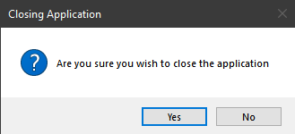
When possible, one should consider explicitly automate the interaction with such dialog component, when possible.
nexial.desktop.explicitWait
-
With explicit wait enabled, one could set a more generous
nexial.pollWaitMs or
"defaultWaitMs"inapplication.jsonfile. Nexial will use such wait value as the maximum amount of time to wait for element to be available. In contrast, in "implicit wait" mode, thenexial.pollWaitMsor"defaultWaitMs"inapplication.jsonwould be consider as _fixed_ wait time. -
With explicit wait enabled, there would be hardly any need to explicitly invoke
base »
waitFor(waitMs), desktop »waitFor(name,maxWaitMs), or desktop »waitForLocator(locator,maxWaitMs)commands. Nexial will orchestrate the wait-and-retry routine, until tha specified max wait time is reached, thus simplify the scripting process with less steps.
nexial.desktop.simulateClick
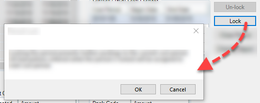
Depending on how the modal component is rendered, this can be an issue and the corresponding command might fail. If you are facing issue where the clicking of a component renders another modal component, and such rendering is causing the corresponding step to fail, then setting this System variable to
true may help.Essentially, setting this System variable to true instructs Nexial to "simulate" the click rather than generating a "real" mouse click event. Using simulated click has the following effects:
- Simulated click allows for immediate completion of the corresponding command, rather than waiting for the mouse event to complete (requires further interaction with the target application).
- Simulate click will always target the center of the target component (based on its bounding rectangle).
clearModalDialog(var,button) command to dismiss the modal component.Note this System variable can impact the following commands:
In addition, if one uses AutoScanning, then it's worth noting that a similar setting can be configured for an individual component instead of the entire execution. For example,
"Lock": {
"type": "DesktopElement",
"xpath": "...",
"controlType": "ControlType.Button",
"name": "Lock",
"automationId": "...",
"elementType": "Button",
"label": "Lock",
"extra": {
"nexial.desktop.simulateClick": true
}
}
See one of the above command links for more details.
nexial.desktop.table.clickBeforeEdit
editTableCells(row,nameValues), Nexial will, by default, click on the target table row -
thus bringing such row to focus - and then proceed to enter specified data to target cells. However there
might be situation where this initial click is not necessary or desirable. In such situation, one can
turn off the default behavior:nexial.desktop.table.clickBeforeEdit=falseNote that this System variable cannot be overridden individually for each desktop grid configuration (i.e. auto-scanned JSON file). One can add this System variable in the
"extra" section of the
corresponding JSON file to customize this behavior, like this:
"grid": {
"type": "DesktopHierTable",
... ...
"extra": {
"nexial.desktop.table.clickBeforeEdit": true
},
... ...
}
nexial.desktop.table.tabAfterEdit
editTableCells(row,nameValues). By default, this System variable is set to
false.Note that this System variable cannot be overridden individually for each desktop grid configuration (i.e. auto-scanned JSON file). One can add this System variable in the
"extra" section of the
corresponding JSON file to customize this behavior, like this:
"grid": {
"type": "DesktopHierTable",
... ...
"extra": {
"nexial.desktop.table.tabAfterEdit": true
},
... ...
}
nexial.desktop.useTypeKeys
- desktop »
sendKeysToTextBox(name,text1,text2,text3,text4) - desktop »
typeTextBox(name,text1,text2,text3,text4) - desktop »
typeAppendTextBox(name,text1,text2,text3,text4) - desktop »
typeTextArea(name,text1,text2,text3,text4) - desktop »
typeAppendTextArea(name,text1,text2,text3,text4)
true
(default is false).When this System variable is set to
true, Nexial converts the text input parameters to
"keystrokes". Functionally this would be equivalent to
web »
typeKeys(os,keystrokes).Note that this System variable cannot be overridden by the desktop component configuration (i.e. auto-scanned JSON file). One can add this System variable in the
"extra" section of the
corresponding JSON file to customize this behavior, like this:
"TextBox1": {
"type": "...",
... ...
"extra": {
"nexial.desktop.useTypeKeys": true
},
... ...
}
nexial.desktop.useAsciiKey
true to instruct Nexial to use ASCII-based key mapping, instead
of the more-common
Unicode PUA (Private Use Area) code points (which, incidentally, is what Selenium is based on).This is at times necessarily, especially in the case of automating legacy applications.
nexial.desktop.dialogLookup
nexial.desktop.infragistics4Aware
nexial.winiumJoinExisting
nexial.winiumPort is also
specified (to the existing running Winium instance). Using both these configurations together can create an
efficient way to script development. By attaching to another active Winium instance (and thus a running
instance of the application under test), one could test out a sequence of test steps without restarting
the application each time.
nexial.winiumPortnexial.winiumSoloModeuseApp(appId)
command was invoked. This is especially useful when dealing with an application that requires additional
time and resources to "startup". When subsequent desktop
» useApp(appId) command is invoked, Nexial will simply reuse the existing running
instance and thus save time.However, it is important to note that desktop »
closeApplication() command will effectively be ignored. One would set this system variable
to false in order to terminate the running AUT instance. Example:

rdbms commands) testing only.
nexial.rdbms.packSingleRow
NULL columns.This system variable is automatically disabled when there are more than 1 row found in the resultset.
mobile commands) testing only.
nexial.mobile.postActionWaitMs
Adjust this System variable to provide a more stable automation, especially for the less performant mobile apps. However any value less than 250 would be ignored as such low value will likely make any impact during the execution. The default value of
0 means that Nexial will not artificially inject any
"pause" between actions.
nexial.mobile.explicitWaitMs
If both
nexial.mobile.explicitWaitMs and nexial.mobile.implictWaitMs are specified,
the former would take precedence as it is usually prefer explicit wait over implicit wait.
nexial.mobile.implicitWaitMs
FAIL. In most cases, it
is preferred to use explicit wait instead of implicit wait. Explicit wait is more flexible and allows for
better control against mobile applications with inconsistent performance.If both
nexial.mobile.explicitWaitMs and nexial.mobile.implictWaitMs are specified,
the former would take precedence as it is usually prefer explicit wait over implicit wait.A value less than 200 (that is, 200 milliseconds) will be ignored.
nexial.mobile.sessionTimeoutMs
This is equivalent to the
newCommandTimeout capability found in
Appium Desired Capabilities (Under General Capabilities / newCommandTimeout). Note that
Nexial expects the value of this System variable in millisecond (for consistency), and will convert it to
seconds for Appium.It might be a good idea to keep the value of this System variable fairly high (e.g.
900000,
or 15 minutes) during a Interactive session. Without the pressure of timing
out (from Appium) too often, one can interactively learn and try out various automation ideas
author the automation script without getting timed out too often.Default value for this System variable is 0 -- meaning, no time out.
nexial.mobile.hideKeyboard
type(locator,type) command. Default
value for this System variable is true.
TMS integration only.
nexial.tms.source
- azure - For
Azure DevOps - testrail - For
Test Rail
service
integration
nexial.tms.url
- For azure-
https://dev.azure.com/{organization}/whereorganizationis Azure DevOps organization - For testrail-
https://{organization}.testrail.io/whereorganizationis TestRail organization
service
integration
nexial.tms.username
nexial.tms.source
This can be empty text for some of the tools which provides access tokens to access apis.To setup TMS integration, please go through
service
integration
nexial.tms.password
nexial.tms.source
This can be password or access token to access apis. For example, Azure requires PAT(Personal Access
Token)To setup TMS integration, please go through
service
integration